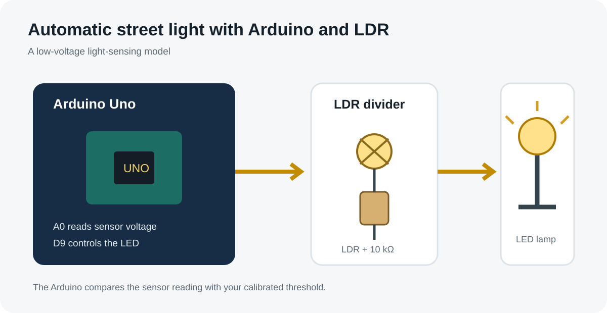
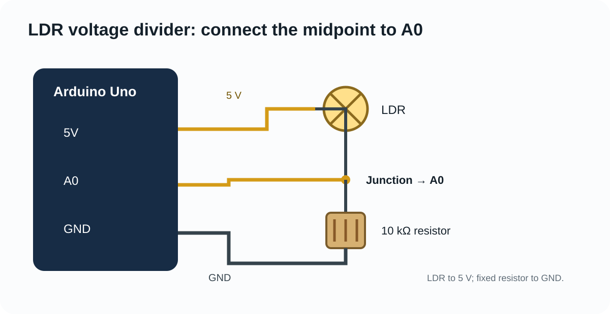
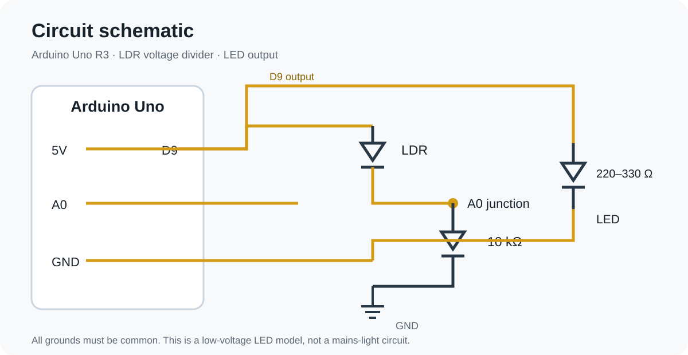
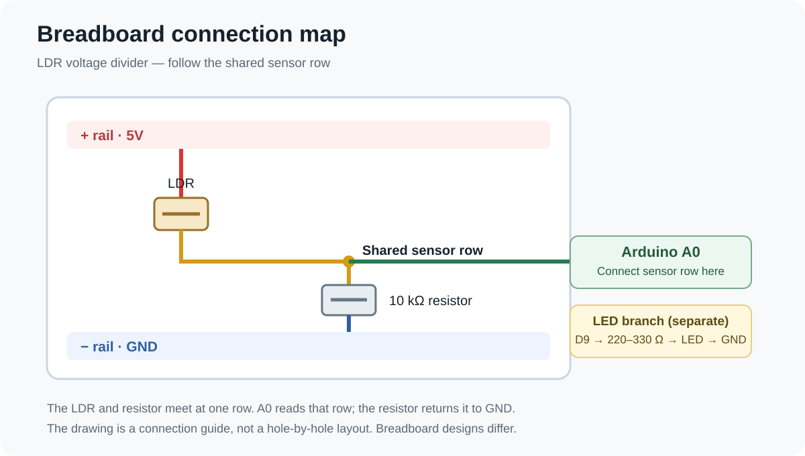
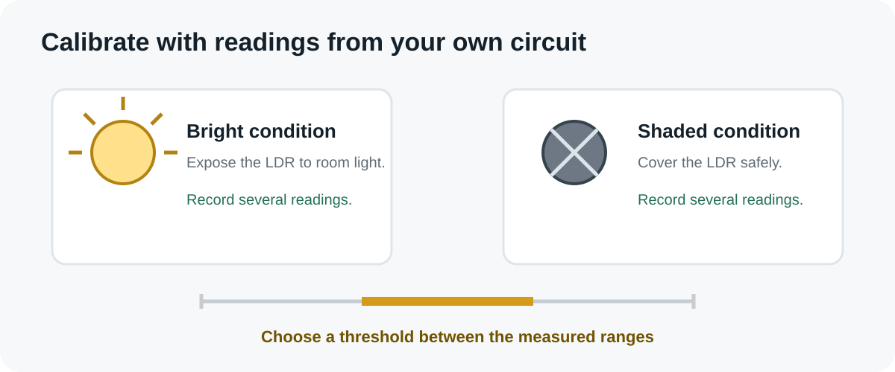

How does an LDR automatic street light work?
An automatic street-light controller needs to distinguish between brighter and darker conditions. A light-dependent resistor provides a simple way to measure changes in ambient light.
An LDR changes resistance as the light falling on its surface changes. In general, its resistance decreases in brighter light and increases in darkness. A fixed resistor connected with the LDR forms a voltage divider. This converts the resistance change into a voltage that an Arduino analog input can read.
The Arduino compares the reading with a threshold. When the reading indicates darkness, the sketch turns the LED on. When it indicates enough light, the LED turns off. The direction of the analog reading depends on the order of the LDR and fixed resistor in the divider.
For the component's basic working principle and terminology, read the light dependent resistor guide. It explains how light changes the component's resistance.

Components required
| Component | Quantity | Purpose |
|---|---|---|
| Arduino Uno R3 or compatible 5 V board | 1 | Reads sensor voltage and controls the LED |
| LDR | 1 | Senses surrounding light |
| 10 kΩ fixed resistor | 1 | Forms the voltage divider |
| LED | 1 | Represents the street light |
| 220 Ω–330 Ω resistor | 1 | Limits LED current |
| Breadboard and jumper wires | As needed | Connects the circuit |
| USB cable | 1 | Powers the board and uploads code |
Some LDR modules include a comparator, potentiometer and analog and digital outputs. Pin labels and behaviour vary, so check the documentation for your exact module. The wiring below uses a bare LDR and a fixed resistor.
Arduino LDR sensor circuit and wiring
Connect the LDR between 5 V and the sensor junction. Connect the 10 kΩ resistor between the same junction and GND. Run a jumper from the junction to analog pin A0.
- Place the LDR and 10 kΩ resistor on the breadboard so one LDR leg and one resistor leg share a junction row.
- Connect the other LDR leg to Arduino 5 V.
- Connect the other resistor leg to Arduino GND.
- Connect the shared junction to analog pin A0.
- Connect the LED anode (long leg) to digital pin 9 through a 220 Ω–330 Ω resistor.
- Connect the LED cathode (short leg) to GND.


Arduino code for the automatic street light
Upload this sketch after wiring the circuit. It prints the sensor reading in the Serial Monitor and switches the LED based on a threshold.
const int ldrPin = A0;
const int ledPin = 9;
// Starting value only. Calibrate it for your lighting.
int lightThreshold = 500;
// With this guide's wiring (LDR to 5V, resistor to GND),
// the reading normally rises as the light gets brighter.
const bool higherReadingMeansBrighter = true;
void setup() {
pinMode(ledPin, OUTPUT);
Serial.begin(9600);
}
void loop() {
int lightValue = analogRead(ldrPin);
Serial.print("LDR reading: ");
Serial.println(lightValue);
bool isDark;
if (higherReadingMeansBrighter) {
isDark = lightValue < lightThreshold;
} else {
isDark = lightValue > lightThreshold;
}
digitalWrite(ledPin, isDark ? HIGH : LOW);
delay(250);
}higherReadingMeansBrighter to false after checking the wiring.Calibrate the LDR threshold
A threshold of 500 is only a starting point. Room lighting, the LDR, resistor tolerance, sensor position and board can all change the readings. Calibrate the actual circuit instead of relying on a copied value.
- Upload the sketch and open Tools → Serial Monitor in the Arduino IDE.
- Set the baud rate to 9600.
- Expose the LDR to normal room light and note its readings for several seconds.
- Shade the LDR with your hand or opaque card. Note the darker readings.
- Choose a threshold between the typical bright and dark readings.
- Change
lightThreshold, upload again and repeat the test.
For example, if bright readings stay around 700–850 and dark readings around 150–300, a threshold near 500 may work. These numbers are illustrative; use your own Serial Monitor readings.

Optional code: stop the LED flickering near the threshold
If the light level stays close to one threshold, small sensor changes can make the LED switch on and off repeatedly. Hysteresis uses two thresholds: one to switch the LED on and another to switch it off. This version matches the wiring in this guide, where a lower reading means darker conditions.
const int ldrPin = A0;
const int ledPin = 9;
// Example values only. Calibrate using your own readings.
const int turnOnBelow = 450; // Switch LED on as it gets darker
const int turnOffAbove = 550; // Switch LED off as it gets brighter
bool lightIsOn = false;
void setup() {
pinMode(ledPin, OUTPUT);
Serial.begin(9600);
}
void loop() {
int lightValue = analogRead(ldrPin);
Serial.println(lightValue);
if (!lightIsOn && lightValue < turnOnBelow) {
lightIsOn = true;
} else if (lightIsOn && lightValue > turnOffAbove) {
lightIsOn = false;
}
digitalWrite(ledPin, lightIsOn ? HIGH : LOW);
delay(250);
}turnOnBelow in the darker range and turnOffAbove in the brighter range. Keep the turn-off value higher than the turn-on value. If you reverse the LDR and fixed resistor, reverse the comparison logic too. Replace the first sketch with this one; do not combine both sketches.Test the automatic light
| Test condition | Expected result | What to check |
|---|---|---|
| LDR exposed to bright light | LED turns off | Reading is on the bright side of your threshold |
| LDR covered or shaded | LED turns on | Reading crosses the threshold into the dark range |
| Light changes near threshold | LED may switch repeatedly | Consider adding hysteresis after the basic circuit works |
Troubleshooting common problems
LED stays on all the time
Check whether the analog reading stays below the threshold. Confirm the A0 junction and resistor connections. Verify whether your divider produces a higher or lower reading in bright light.
LED never turns on
Shade the LDR and watch the Serial Monitor. If the value changes but never crosses the threshold, adjust the threshold. If it does not change, check the LDR wiring, breadboard rows and ground connection.
Readings jump around
Keep the LDR away from flickering lamps, secure loose jumper wires and keep the sensor position consistent. You can average several readings after the basic circuit works.
My module has VCC, GND, AO and DO pins
For this sketch, use the module's AO output with A0, along with VCC and GND according to the module's rated supply. DO is a digital comparator output and behaves differently. Some modules use an onboard potentiometer to set the digital switching point. Do not connect AO and DO to the same Arduino input.
Ways to improve the project
- Add hysteresis: use separate turn-on and turn-off thresholds to prevent rapid switching near one borderline value.
- Use an LDR module: a module with an adjustable comparator can provide a digital output, but check its voltage and pinout first.
- Build a model street: add low-current LEDs, each with its own current-limiting resistor, while staying within the board's electrical limits.
- Log readings: record values at different times to understand how placement and local lighting affect the sensor.
Frequently asked questions
Can I use Arduino Uno R3 for an LDR street-light project?
Yes. The Uno can read the voltage from an LDR voltage divider through an analog input and control a low-current LED from a digital output.
Which resistor is suitable for an LDR circuit?
A 10 kΩ resistor is a practical starting point for many common LDRs, but it is not universal. The fixed resistor and LDR form a voltage divider, so their resistance values determine how much the A0 voltage changes. If your readings barely change across the lighting conditions you need to detect, try a nearby standard value such as 4.7 kΩ or 22 kΩ and compare the Serial Monitor readings. Keep the resistor value fixed while calibrating, and choose the value that gives useful separation between bright and dark readings.
Why does my LDR value change in the opposite direction?
The direction depends on which component connects to the supply and which connects to ground. Swapping the LDR and fixed resistor positions reverses the voltage-divider response.
Can this circuit control a real street light?
This breadboard circuit is a demonstration, not a mains-light controller. A real installation requires a properly rated, isolated switching stage and suitable electrical and weather protection.
What to learn next
If you are new to the controller, read Arduino Uno R3 to understand the Uno board, its pins and how sketches run. Then explore more projects in the Vayuyaan sensor learning hub.